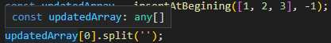
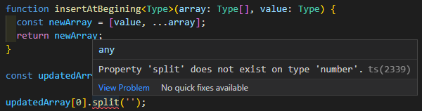
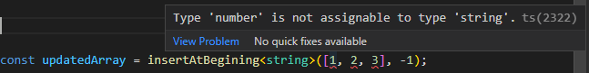

Generics Type
在 TypeScript 的專案中，有些 function 會提供多種 type 以供不同的情境使用，但有時會因為這樣導致回傳的資料 type 不明確，所以 TypeScript 提供了一種方式來解決這個問題
Inference
一個簡單的變數如下，如果一開始就有賦值，TypeScript 就會以這個值的 type 作為這個變數的 type，這就稱為 Inference
1 | let name = 'Jerry'; // string |
Generics
有一個 function 的功能是任何 type array 和另一個變數整合成一個新的 array 回傳，如下:
1 | function insertAtBegining(array: any[], value: any) { |
如果給定一組 number array 和另外一個 number，理所當然的回傳一組新的 number array，但因為 inference 的原因，不論帶入的參數是什麼 type，回傳的 newArray 都會被視為 any[]，所以即便使用 string method split 也不會抱錯，這麼一來就失去使用 TypeScript 的目的了
1 | const updatedArray = insertAtBegining([1, 2, 3], -1); |

但不用擔心，TypeScript 為了解決這種問題提供了 Generic Type 的方式為每一次使用個別判斷 Type，只需要在 function name 後加上 <T>(T 只是慣用的 Type 簡稱)，並將參數也改成這個 type，這麼一來在 number 使用 string method 就會抱錯了
1 | function insertAtBegining<T>(array: T[], value: T) { |

generics type 不只可以在定義時使用，在執行時也可以直接定義確保 TypeScript inference 不會有任何錯誤，也可以在資料帶入時就直接檢查
1 | const updatedArray = insertAtBegining<string>([1, 2, 3], -1); |

Array
另外，我們在定義任何 array type 時，透過 ${type}[] 這種寫法是一種 syntactic sugar，Array 本身就是一種 Generics Type，所以原來的寫法其實是 Array<${type}>
1 | const numberArray: number[] = [1, 2, 3]; |